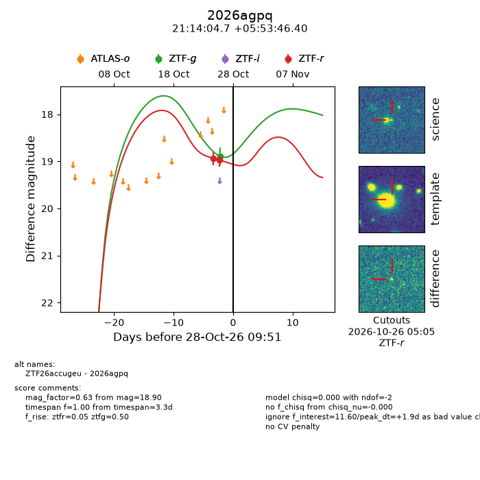
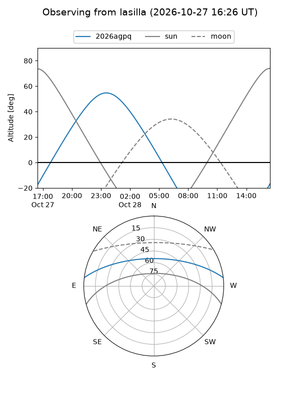
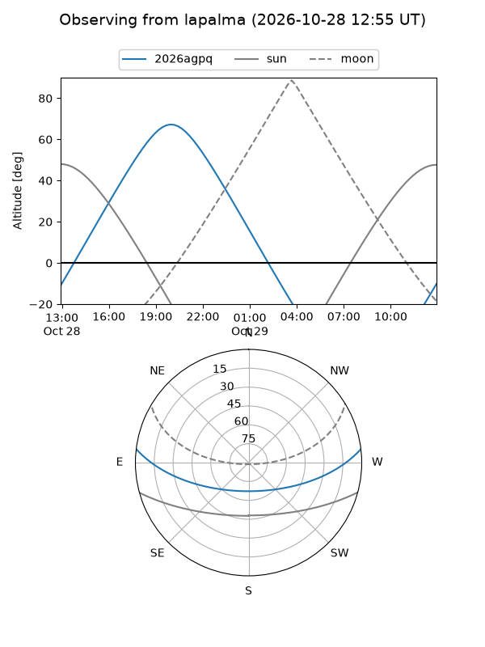
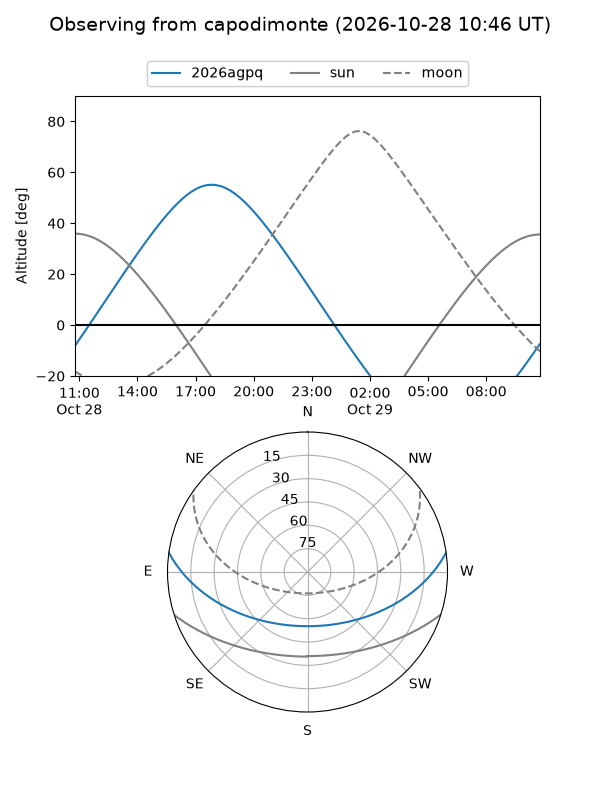
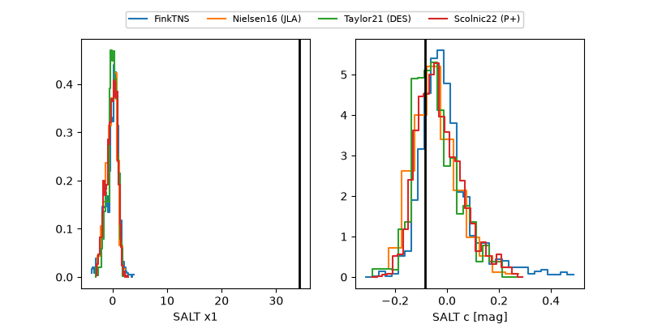

2026agpq
Target 2026agpq at 2026-10-28 09:52
Aliases and brokers:
FINK-ZTF: ztf.fink-portal.org/ZTF26accugeu
Lasair-ZTF: lasair-ztf.lsst.ac.uk/objects/ZTF26accugeu
ALeRCE-ZTF: alerce.online/object/ZTF26accugeu
YSE-PZ: ziggy.ucolick.org/yse/transient_detail/2026agpq
TNS name: wis-tns.org/object/2026agpq
Direct TNS query: direct search
alt names
ZTF26accugeu (ztf,fink_ztf)
2026agpq (tns,yse)
Coordinates:
equatorial (ra, dec) = 318.5198,+5.89622
equatorial (HMS+DMS) = 21:14:04.74,+05:53:46.40
galactic (l, b) = (56.6960,-27.98607)
Flags:
peak dt: +1.9
Photometry:
last ztfg=18.90, ztfr=18.97
1 ztfg, 2 ztfr detections
Lightcurve

Visibility



Additional plots
